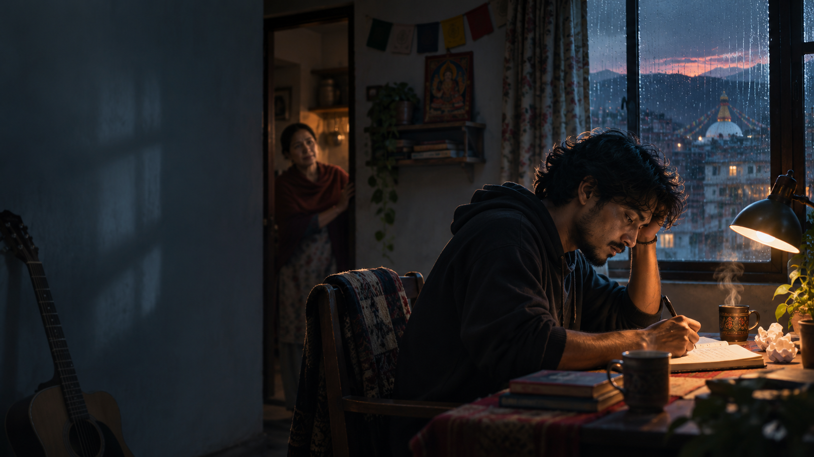
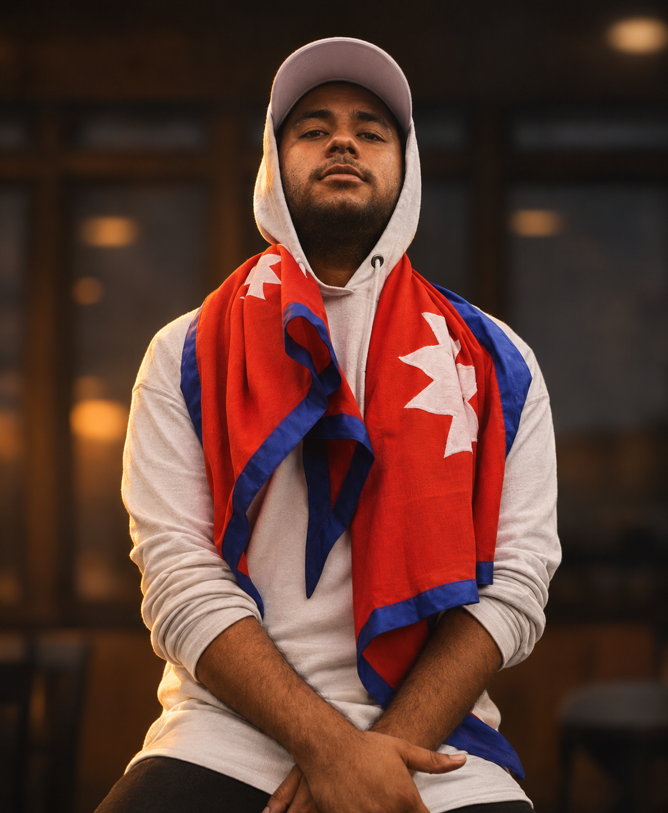
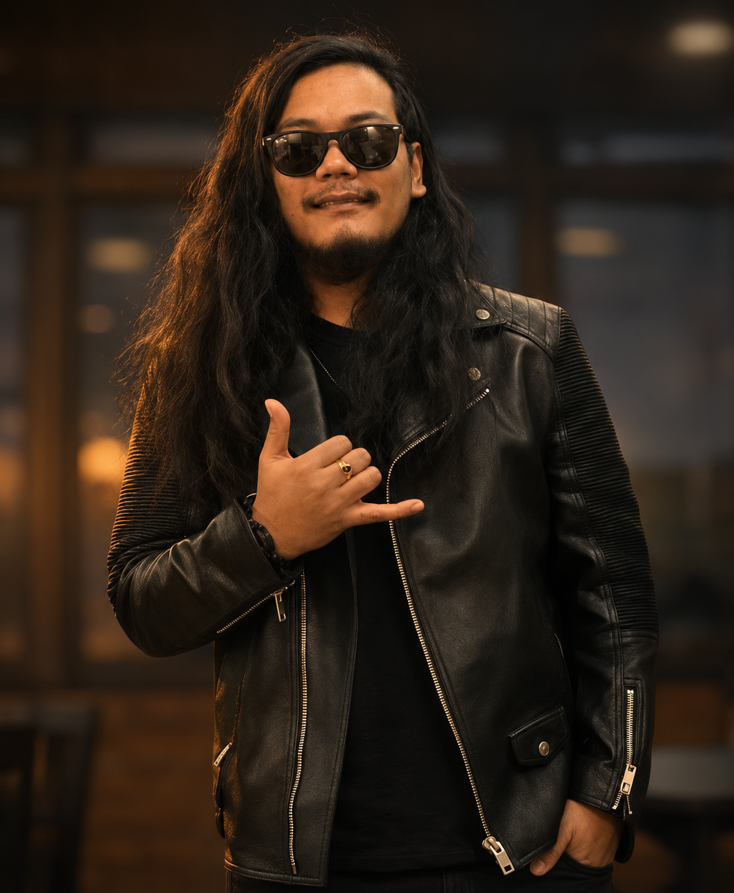

Lead Impact Partner
NPR 250,000
- Category exclusivity and priority brand integration
- Top logo placement and up to four social posts
- One co-designed campaign activation
- Behind-the-scenes access, premiere and report

A music video partnership
Uniq Poet feat. VEK
This early recording is a work in progress. The final track will be available soon for private listening to partners who confirm they’d like to move forward.
The ask
We’re looking for partners to help make a Nepali music video about financial pressure, family expectations, depression, and recovery. The release pairs the film with a campaign that encourages people to check in on someone they care about.
NPR 700,000 working budget NPR 600,000 production · NPR 100,000 marketing
Partnership
NPR 250,000
NPR 100,000
NPR 60,000
Equipment, locations, transport, hospitality, styling, media, event support, post-production, or qualified mental-health review. Credit reflects the agreed contribution.
Lead artist & featured vocals

Lead artist
Utsaha Joshi is a Nepali rapper and lyricist who came up through Raw Barz. His work pairs intricate writing with personal and social themes.

Featured vocals
Bibek Waiba Lama is a Nepali singer known for “Lai Bari Lai” and “Eklai Jiuna Sikey.” He brings melodic vocals to the collaboration.
AI-enhanced portraits from published photographs. Uniq Poet photo · VEK photo
 68K Instagram followers
68K Instagram followers 200K Facebook followers
200K Facebook followers 11K TikTok followers
11K TikTok followersYouTube figures reviewed 24 November 2026. Social figures supplied by the artist team.
The story
A man enters his thirties feeling he’s fallen short of the promises he made to his mother. After a suicide attempt, she and the neighbours find him alive. The story follows his turn toward survival and the possibility of recovery.
In the chorus, aash, meaning hope, becomes saas, meaning breath. By the end, it returns to aash.
Social impact
Nepal recorded 6,852 deaths by suicide in FY 2024/25, according to the Ministry of Health and Population’s review of Nepal Police records.
Short videos with Uniq Poet invite viewers to call or message someone they care about. Each video points to verified support resources.
Partner fit Telecom and digital platforms
Measures Video completion and resource clicks
A moderated conversation with Uniq Poet and a mental-health professional.
A moderated collection of messages of encouragement online or at the premiere.
A short video asks Nepalis abroad to make time for a call home.
Clips and resources connect viewers with career, skills, and financial education programmes.
Independent alignment. A qualified adviser reviews sensitive content before release, and reporting focuses on measured engagement.
Production & release
Timing starts after scope and funding are confirmed. The release includes an official YouTube video, social cutdowns, agreed sponsor assets, and a performance summary within 30 days of launch.
Weeks 1–3Treatment, locations, cast, and final prep
Week 4Music video shoot
Weeks 5–6Edit, qualified review, approvals, and launch